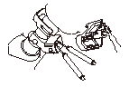

フューエル インジェクタの点検
点検後はアイドリング回転数、点火時期、排気ガス濃度の各点検·調整をする。
エンジンが始動できない場合
インテーク マニホールドを取外す。
フューエル インジェクタ（A）のカプラを外し、フューエル インジェクタの端子間の抵抗値を測定する。
基準値:
10 - 13Ω
•
異常の場合は、フューエル インジェクタを交換する。
•
フューエル インジェクタに異常がない場合は、以下の項目を点検し、すべてに異常がない場合は、ECUを交換し、再点検する。
-
ヒューズ ボックス内のNo.39 IGP（15A）ヒューズ不良
-
PGM-FIメイン リレー1不良
-
フューエル インジェクタとジャンクション カプラ間の配線の短絡、断線、接触不良
-
フューエル インジェクタとECU間の配線の短絡、断線、接触不良
-
電源側の若葉、黄/黒コードの断線、短絡

エンジンが始動できる場合
HDSでインスペクション メニューのインジェクタ気筒別停止を実行する。
アイドリング状態で、それぞれ各インジェクタの作動を停止させ、アイドリング回転数の変化を確認する。
•
各気筒同じ変化の場合は、インジェクタは正常。
•
変化がない場合は、その気筒のインジェクタを交換し、再点検する。
アイドリングの状態で、サウンド スコープ（無い場合は配線ドライバなど）を用い、各フューエル インジェクタの作動音を点検する。
•
作動音がしない場合は、フューエル インジェクタを交換し、再点検する。異常がない場合は、以下の項目を点検し、すべてに異常がない場合は、ECUを交換し、再点検する。
-
フューエル インジェクタとジャンクション カプラ間の配線の短絡、断線、接触不良
-
フューエル インジェクタとECU間の配線の短絡、断線、接触不良
-
電源側の若葉、黄/黒コードの断線、短絡
 点検後はアイドリング回転数、点火時期、排気ガス濃度の各点検·調整をする。
点検後はアイドリング回転数、点火時期、排気ガス濃度の各点検·調整をする。
点検後はアイドリング回転数、点火時期、排気ガス濃度の各点検·調整をする。
点検後はアイドリング回転数、点火時期、排気ガス濃度の各点検·調整をする。